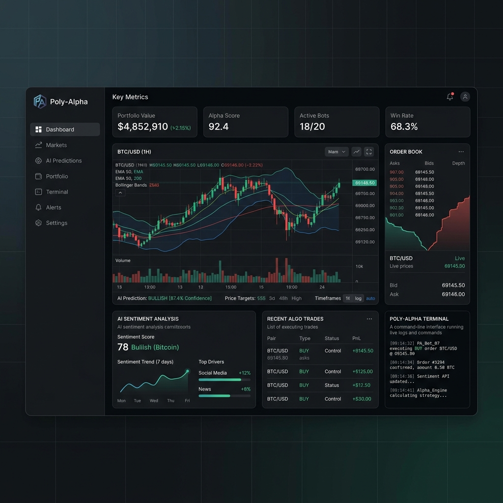

Research tooling for prediction markets.
Poly-Alpha is an offline research and paper-trading platform for prediction-market strategies: provenance-tagged data contracts, uncertainty-aware research, strategy comparison, and risk analysis. It does not execute live trades.

The Execution Layer for Quantitative AI.
Poly-Alpha is a research platform for prediction-market strategies. It provides shared market and asset data contracts, provenance-tagged research with uncertainty intervals, in-sample strategy comparison, and portfolio risk analysis — all offline and deterministic.
The platform ships deterministic fixture and synthetic datasets alongside an optional real Polymarket market reader. Notes carry sources and caveats; fixture, simulated, and synthetic values are always labeled and are never presented as observed data.
It reads Polymarket market data only. There is no Kalshi or Manifold integration, no order placement, no fund movement, and no validated performance or Sharpe figure. Backtest metrics are in-sample and are not forecasts.
Reason
Agents continuously read news, analyst reports, and market microstructure to form their own probability estimates — updated in real-time.
Optimize
A dedicated risk agent applies Kelly Criterion sizing and Shin debiasing to determine optimal position sizes that protect against systemic ruin.
Execute
An execution agent submits limit orders directly to L2 orderbooks via our native connector — in under 10 milliseconds, ahead of REST-API competitors.
Research Platform Capabilities
Engineered for high-throughput autonomous reasoning and tool execution.
Agentic Reasoning & Reflection
Poly-Alpha agents don't just parse data; they understand market intent. Utilizing fine-tuned LLM models, agents conduct continuous chain-of-thought analysis on real-time news streams, reflecting on their own probabilities before finalizing a strategy. They dynamically update their Bayesian priors without human intervention.
Autonomous Tool Use
Market data is read from Polymarket; there is no live order execution or low-latency trading claim.
Self-Correcting Risk
Dedicated risk agents continuously monitor portfolio health, employing self-correction heuristics to halt trades and prevent ruin.
Goal-Oriented Optimization
Run deterministic research over labeled fixture, synthetic, and optional real markets; screen candidates by a conservative edge bound, size them with capped fractional Kelly, and analyze portfolio risk. Every estimate carries provenance and an uncertainty interval.
The Agentic Architecture
Poly-Alpha offers a resilient network of specialized AI agents, securely managing high-frequency telemetry.
import polyalpha as pa
from loguru import logger
# Initialize autonomous swarm
swarm = pa.Swarm(api_key="sk_live_...", sandboxing=True)
# Define high-level objective
directive = "Capture premium on FED_RATES without exceeding 1.5% DD."
logger.info("Deploying Poly-Alpha Agents...")
plan = swarm.reason_and_plan(directive=directive)
swarm.execute_plan(plan, await_human_approval=False)Built by Researchers
Founded by a specialized team of machine learning and quantitative systems engineers.
Transparent SaaS Pricing
Scale your autonomous capital deployment with predictable infrastructure costs.
Developer
For independent researchers.
- 1 Autonomous Swarm
- 1M API Requests / month
- Standard REST Execution
- End-of-Day Data Sync
Professional
For prop desks and small funds.
- 5 Autonomous Swarms
- Offline research pipeline
- Unlimited API Requests
- Research journal export
- Priority Slack Support
Enterprise
For institutional capital.
- Unlimited Swarms
- Petabyte Historical Data Lake
- Custom Debiasing Parameters
- On-Premise Deployment
- SOC-2 Audit Reports
Explore the Research Platform
Run the offline research, comparison, and risk tooling described in the repository README.